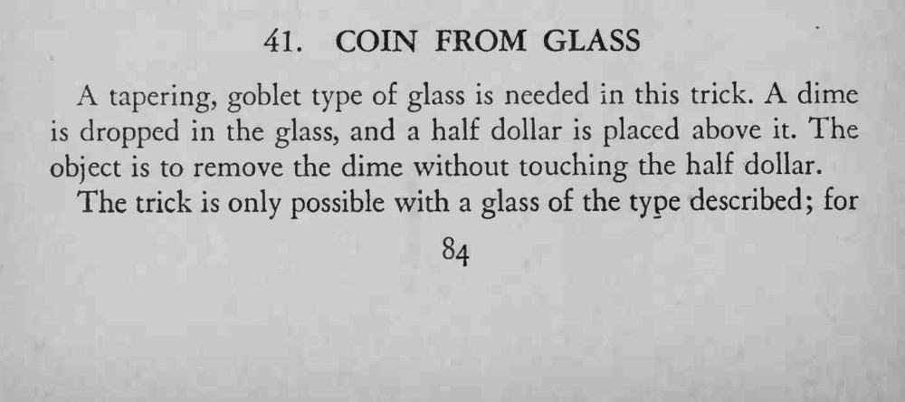
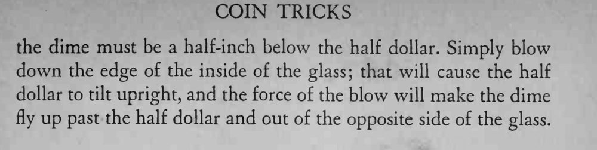

一角硬币装在杯里，上面压着一枚半美元。魔术师不碰半美元，只吹一口气，就把一角硬币从杯里取了出来。
杯子必须是那种杯口收窄的高脚杯，两枚硬币相距约半英寸，吹气要贴紧杯壁。


A tapering, goblet type of glass is needed in this trick. A dime is dropped in the glass, and a half dollar is placed above it. The object is to remove the dime without touching the half dollar. The trick is only possible with a glass of the type described; for the dime must be a half-inch below the half dollar. Simply blow down the edge of the inside of the glass; that will cause the half dollar to tilt upright, and the force of the blow will make the dime fly up past the half dollar and out of the opposite side of the glass.